Chanakya Kalyanaraman (Chan)
Supply chain analyst with an engineering habit: build the model, test it against reality, then say plainly what the numbers mean. Aerospace Engineering, Warwick Business School.
Currently working within Co-op's UK ambient distribution network in Coventry, alongside an MSc in Management at Warwick Business School. Background spans aerospace engineering, international manufacturing, and product management, four different fields, one consistent way of working through them. Open to Supply Chain, Operations, and Planning Analyst roles across the UK.
Demand, Stock & Forecasting: an Ambient Distribution Depot, Summer 2026
A self-directed portfolio project modelling the ambient (room-temperature) distribution centre I currently work in at Co-op, built to demonstrate the actual work of a supply chain analyst: KPI tracking, root-cause investigation, and event-aware forecasting.
The question
Summer 2026 carried two genuine shocks to the network: the FIFA World Cup, a demand spike anyone could see coming months in advance, and an unexplained pet food demand spike staff nicknamed "Christmas for the pets." The project asks a real analyst's question of both: what could better planning have fixed, and what actually needed investigating instead?
Built on real data, not invented numbers
2,470 of the 2,524 product names are drawn directly from a real, public grocery dataset (Instacart's Market Basket Analysis, 49,694 products)1, sampled from the categories that genuinely match this depot's real ambient range, filtered for UK-appropriate naming. Only 54 SKUs (a restricted tobacco aisle and a small toys range, neither present in any grocery dataset) are reasonably invented, and labelled as such. The World Cup demand assumptions are calibrated against real reported UK retail figures (NielsenIQ, The Grocer, The Guardian, Asian Trader), cited in full in the workbook.
1. Instacart (2017). The Instacart Online Grocery Shopping Dataset 2017. Originally released for the Instacart Market Basket Analysis Kaggle competition. kaggle.com/datasets/psparks/instacart-market-basket-analysis
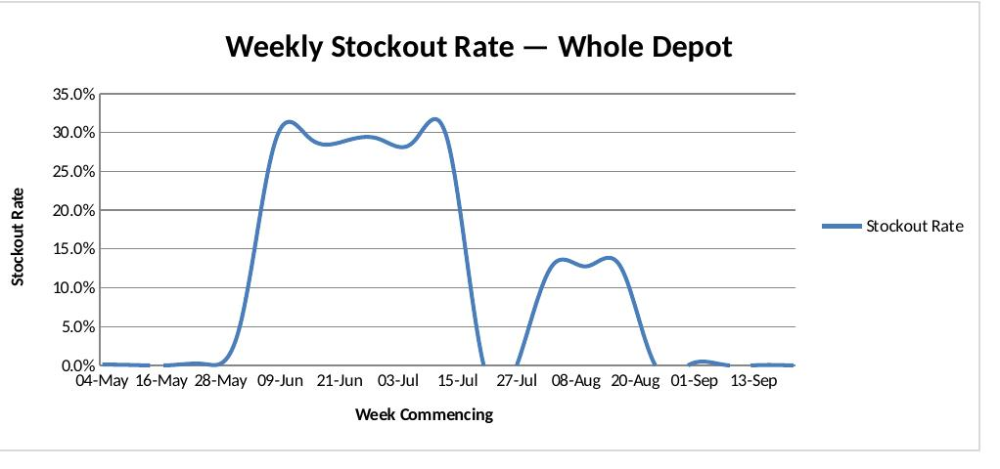
Finding 1 — The World Cup was largely preventable
Naive forecasting (no knowledge of the tournament) produced a 29.0% stockout rate during World Cup weeks. A forecast adjusted for the tournament's known dates, public knowledge months in advance, cut that to 1.0%, and reduced total stockout units by 99.1% (from 281,162 to 2,489 units).
Finding 2 — Not every anomaly is a planning failure
The pet food stockout rate held at 100% for three weeks, whether or not the event-aware planning adjustment was applied. Because the spike was never foreseeable, no amount of better forecasting could have fixed it, it needed investigation, not a formula. That distinction is the actual point of the project.
Finding 3 — Delivery performance degrades predictably with distance
On-time delivery ranged from 94.5% (Coventry & West Midlands) down to 78.8% (Scotland), a clean, distance-driven pattern rather than random variation.
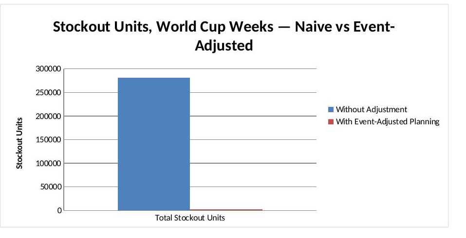
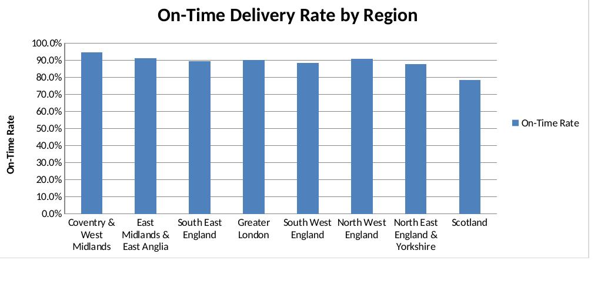
Performance Enhancement of Canoes Using Hydrofoil
BTech major project, Aerospace Engineering, SRM Institute of Science and Technology. A CFD-driven study asking a simple question with a rigorous answer: can retrofitting a hydrofoil measurably cut drag and add lift to a sprint canoe?
Method, grounded in real benchmarks
Design speed was set to the actual K1 canoe sprint world record (37.446s over 200m → 5.33 m/s), not an arbitrary number. Before trusting any result, a mesh independence study confirmed the simulation had converged (<1% change) at roughly 10 million cells.
Eight candidate NACA and Eppler airfoils were compared using real XFoil polar data at the actual operating Reynolds number (~1,000,000). NACA 4412 at 6° angle of attack won on efficiency (Cl/Cd), and was then sized against a real target lift requirement (843.66N, split across tandem foils) before being retrofitted and re-tested.
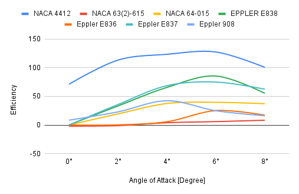
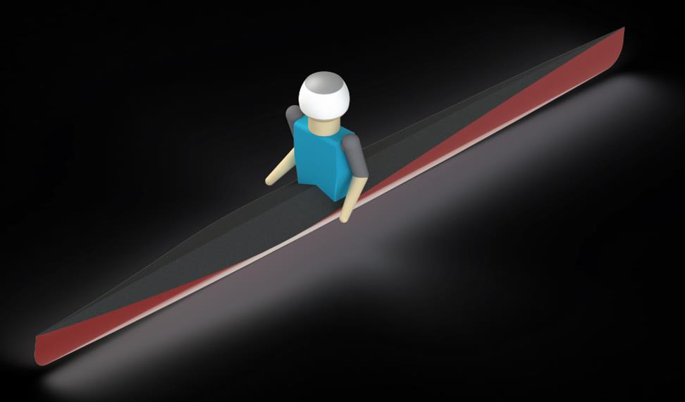
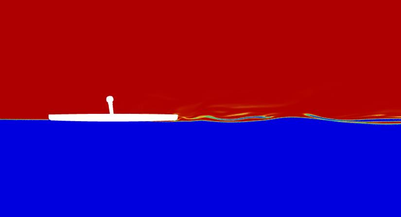
Result — a large, validated performance gain
Total drag fell 63.3% (116.95N → 42.85N). Viscous drag, the dominant component before retrofitting, fell 98.2% (49.81N → 0.87N) once the hull was lifted clear of the water. Total lift rose 75.3% (236.50N → 414.59N).
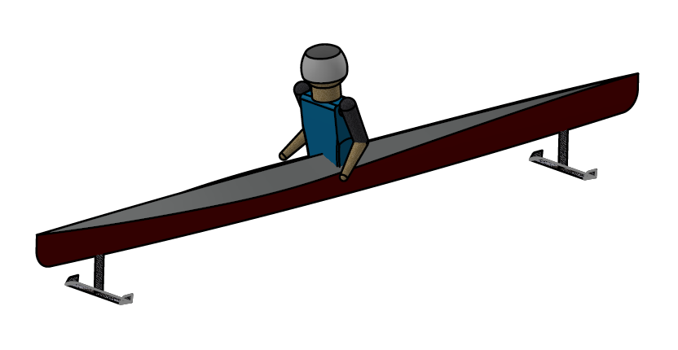
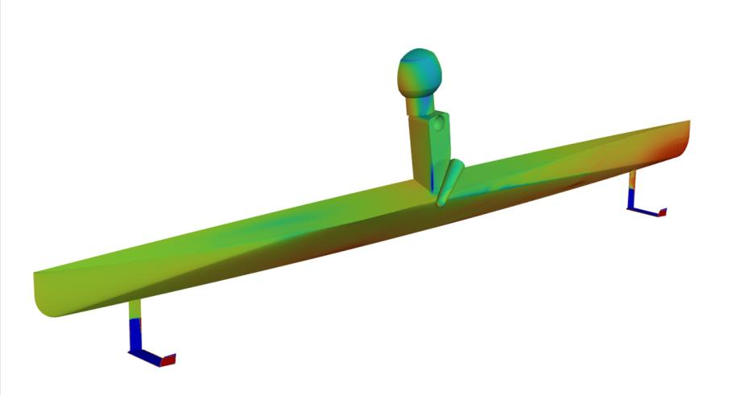
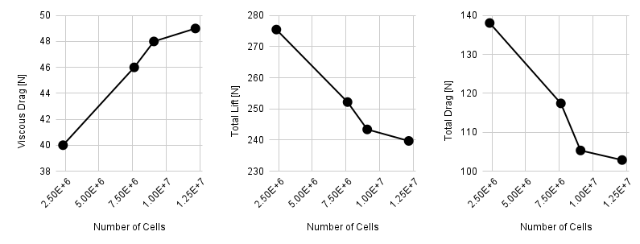
Local Encounter: a Two-Sided Travel Marketplace
A full MVP scope, written as Product Manager, for a marketplace connecting travellers with verified local guides, built against the actual gap in today's travel platforms: standardised tours with no room for something personal, and guides stuck on informal, high-commission channels.
Three named use cases anchor the PRD in real behaviour rather than abstract requirements: Rachel, booking a cultural walk in Chennai; Arjun, a Jaipur guide managing bookings and earnings; and Sophie, clarifying safety details with her guide before a cycling tour.
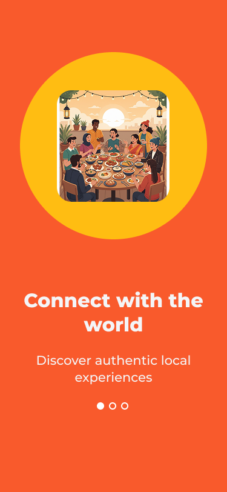
Traveller journey
Onboarding through account creation, guide discovery, booking, payment, confirmation, in-app chat, live location sharing, and Emergency SOS, a deliberate safety-first inclusion, through to the traveller's own profile.
Guide journey
A parallel onboarding path into a working dashboard: bookings, an earnings tracker, and a verified profile guides can use to build trust with new travellers.
Admin: guide verification
A city-by-city view of pending and approved guide applications, with per-applicant ID, selfie and video verification status, so trust is actively managed, not assumed.
What stayed in the MVP, and what didn't
Deliberate scoping is its own skill. Cutting the wrong features stalls a launch; cutting the right ones protects it.
In scope
- Browse & book, with secure payment
- Guide listing creation & management
- Bookings dashboard, both sides
- Guide earnings page
- In-app messaging, pre- and post-booking
- Verified profiles, both personas
Deliberately out
- Dynamic / surge pricing
- Group split payments
- Gamification (badges, leaderboards)
- AI-based traveller-guide matching
- Third-party integrations (TripAdvisor, calendar sync)
Open risks, named rather than hidden
The Influence of Emotional Intelligence on the Cognitive Processes and Decision-Making of Startup Entrepreneurs
MSc Management dissertation, Warwick Business School, awarded Distinction. A quantitative study of 100 startup founders testing whether Emotional Intelligence functions as a cognitive enabler, a risk moderator, and a coping resource, not just a vague, feel-good trait.
Design
A pragmatist, cross-sectional survey of founders one to seven years into their venture, recruited through professional networks and snowball referral. Reliability held across every scale used (Cronbach's α ≥ .82). Regression predictors were mean-centred before interaction terms were built, standard practice to guard against multicollinearity.
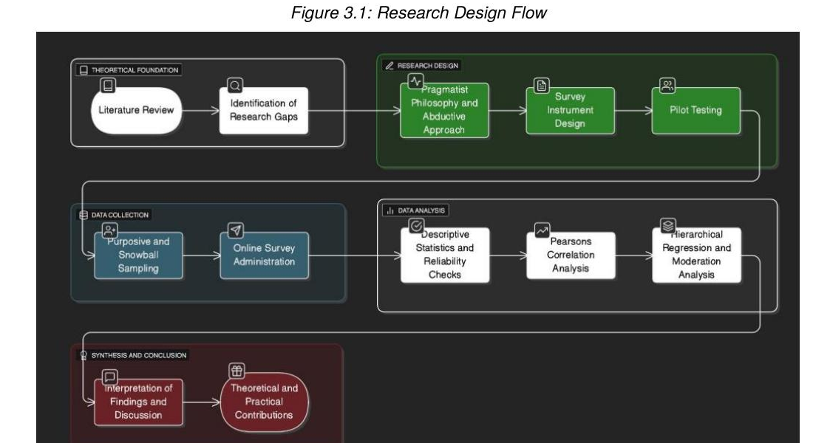
Finding 1 — EI as a cognitive enabler
EI correlated strongly with metacognitive strategies (r = .47, p < .01). Higher-EI founders reflect and self-monitor more, direct support for an ability-based model of EI, not a diffuse personality trait.
Finding 2 — EI moderates risk, it doesn't override it
Hierarchical regression showed EI significantly moderates the link between risk perception and strategic choice (β = .35, p < .01, explaining a further 8% of variance). EI doesn't make founders more risk-seeking, it changes how risk gets translated into action, resolving a genuine contradiction in prior literature.
Finding 3 — a counter-intuitive result on emotional labour
EI correlated positively with awareness of emotional labour (r = .31, p < .01). High-EI founders aren't less burdened by projecting confidence to investors and composure to staff, they're more attuned to that cost, which the dissertation argues is protective rather than draining.
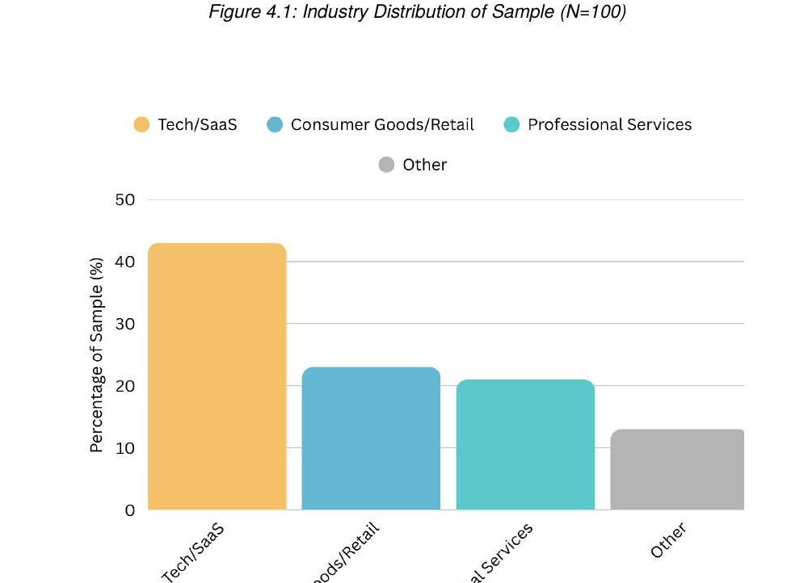
Practical takeaway: EI functioned as a strategic asset in this sample, not a soft skill. Reflective practices (journaling, structured peer feedback) map directly onto the mechanism the data actually shows.